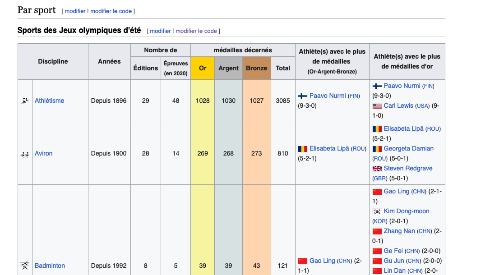

# TD 2
library(rvest)
library(purrr)
library(stringr)Librairies
Semaine 2 Exercices
1 . Lancer la commande suivante :
list_tables <-
session("https://fr.wikipedia.org/wiki/Liste_des_m%C3%A9daill%C3%A9s_olympiques") |>
html_elements(".wikitable") |>
html_table()
head(list_tables, n= 1)[[1]]
# A tibble: 31 × 11
Discipline Discipline Années `Nombre de` `Nombre de` `médailles décernés`
<chr> <chr> <chr> <chr> <chr> <chr>
1 "Discipline" Discipline Années Éditions Épreuves(e… Or
2 "" Athlétisme Depui… 29 48 1028
3 "" Aviron Depui… 28 14 269
4 "" Badminton Depui… 8 5 39
5 "" Basket-ball Depui… 20 4 32
6 "" Boxe 1904,… 26 13 266
7 "" Canoë-kayak Depui… 20 16 242
8 "" Cyclisme(ho… Depui… 29 22 263
9 "" Équitation 1900,… 26 6 151
10 "" Escrime Depui… 29 12 223
# ℹ 21 more rows
# ℹ 5 more variables: `médailles décernés` <chr>, `médailles décernés` <chr>,
# `médailles décernés` <chr>,
# `Athlète(s) avec le plus de médailles (Or-Argent-Bronze)` <chr>,
# `Athlète(s) avec le plus de médailles d'or` <chr>2. Que s’est-il passé ? Que contient l’objet list_tables ?
La commande récupère les informations de Wikipedia (image ci-dessous), qui contient une liste de tibbles, chacun représentant un tableau qui contient les informations sur les médaillés olympiques.

Nous allons tout d’abord nous intéresser à la première table, les jeux olympiques d’été.
Créer un objet intitulé data_medailles_sport_ete contenant le premier élément de list_tables.
data_medailles_sport_ete <- list_tables[[1]]La table n’est pas bien formatée.
Je supprime la première colonne, la première ligne et je modifie les noms de colonnes
data_medailles_sport_ete <- data_medailles_sport_ete[-1, -1]
colnames(data_medailles_sport_ete) <- c("Discipline", "Annees", "Editions", "Epreuves_2020", "Or", "Argent", "Bronze", "Total", "Athletes_medailles", "Athletes_or")
str(data_medailles_sport_ete)tibble [30 × 10] (S3: tbl_df/tbl/data.frame)
$ Discipline : chr [1:30] "Athlétisme" "Aviron" "Badminton" "Basket-ball" ...
$ Annees : chr [1:30] "Depuis 1896" "Depuis 1900" "Depuis 1992" "Depuis 1936" ...
$ Editions : chr [1:30] "29" "28" "8" "20" ...
$ Epreuves_2020 : chr [1:30] "48" "14" "5" "4" ...
$ Or : chr [1:30] "1028" "269" "39" "32" ...
$ Argent : chr [1:30] "1030" "268" "39" "32" ...
$ Bronze : chr [1:30] "1027" "273" "43" "32" ...
$ Total : chr [1:30] "3085" "810" "121" "96" ...
$ Athletes_medailles: chr [1:30] "Paavo Nurmi (FIN) (9-3-0)" "Elisabeta Lipă (ROU) (5-2-1)" "Gao Ling (CHN) (2-1-1)" "Teresa Edwards (USA) (4-0-1)" ...
$ Athletes_or : chr [1:30] "Paavo Nurmi (FIN) (9-3-0) Carl Lewis (USA) (9-1-0)" "Elisabeta Lipă (ROU) (5-2-1) Georgeta Damian (ROU) (5-0-1) Steven Redgrave (GBR) (5-0-1)" "Gao Ling (CHN) (2-1-1) Kim Dong-moon (KOR) (2-0-1) Zhang Nan (CHN) (2-0-1) Ge Fei (CHN) (2-0-0) Gu Jun (CHN) (2"| __truncated__ "Teresa Edwards (USA) (4-0-1) Sue Bird (USA) (4-0-0) Tamika Catchings (USA) (4-0-0) Lisa Leslie (USA) (4-0-0) Di"| __truncated__ ...Les colonnes Editions, Epreuves_2020, Or, Argent, Bronze, Total seront converties en colonnes d’entiers.
data_medailles_sport_ete[c("Editions", "Epreuves_2020", "Or", "Argent", "Bronze", "Total")] <- lapply(data_medailles_sport_ete[c("Editions", "Epreuves_2020", "Or", "Argent", "Bronze", "Total")], as.integer)
str(data_medailles_sport_ete)tibble [30 × 10] (S3: tbl_df/tbl/data.frame)
$ Discipline : chr [1:30] "Athlétisme" "Aviron" "Badminton" "Basket-ball" ...
$ Annees : chr [1:30] "Depuis 1896" "Depuis 1900" "Depuis 1992" "Depuis 1936" ...
$ Editions : int [1:30] 29 28 8 20 26 20 29 26 29 27 ...
$ Epreuves_2020 : int [1:30] 48 14 5 4 13 16 22 6 12 2 ...
$ Or : int [1:30] 1028 269 39 32 266 242 263 151 223 34 ...
$ Argent : int [1:30] 1030 268 39 32 266 241 261 149 223 34 ...
$ Bronze : int [1:30] 1027 273 43 32 472 243 260 148 221 35 ...
$ Total : int [1:30] 3085 810 121 96 1004 726 784 448 667 103 ...
$ Athletes_medailles: chr [1:30] "Paavo Nurmi (FIN) (9-3-0)" "Elisabeta Lipă (ROU) (5-2-1)" "Gao Ling (CHN) (2-1-1)" "Teresa Edwards (USA) (4-0-1)" ...
$ Athletes_or : chr [1:30] "Paavo Nurmi (FIN) (9-3-0) Carl Lewis (USA) (9-1-0)" "Elisabeta Lipă (ROU) (5-2-1) Georgeta Damian (ROU) (5-0-1) Steven Redgrave (GBR) (5-0-1)" "Gao Ling (CHN) (2-1-1) Kim Dong-moon (KOR) (2-0-1) Zhang Nan (CHN) (2-0-1) Ge Fei (CHN) (2-0-0) Gu Jun (CHN) (2"| __truncated__ "Teresa Edwards (USA) (4-0-1) Sue Bird (USA) (4-0-0) Tamika Catchings (USA) (4-0-0) Lisa Leslie (USA) (4-0-0) Di"| __truncated__ ...3. Quelles sont les 3 disciplines avec le plus de médailles distribuées depuis le début de l’histoire des jeux olympiques ?
à l’aide de : order, nous pouvons trier les indices des lignes du dataframe en fonction de la colonne Total, en ordre décroissant (decreasing = TRUE signifie que les valeurs les plus élevées viennent en premier).
top3_disciplines <- data_medailles_sport_ete[order(data_medailles_sport_ete$Total, decreasing = TRUE), ][1:3,]
cat("Les 3 disciplines avec le plus de médailles sont :", paste(top3_disciplines$Discipline, collapse = ", "), "\n")Les 3 disciplines avec le plus de médailles sont : Athlétisme, Natation(hommes, femmes), Lutte 4. Quelles sont les disciplines avec le moins d’épreuves en 2020 ?
disc_moins_epreuves_2020 <- data_medailles_sport_ete[(data_medailles_sport_ete$Epreuves_2020 == (min(data_medailles_sport_ete$Epreuves_2020))),]
# utilisation du min et == pour trouver les epreuves avec le moins d'épreuves
cat("Les disciplines avec le moins d'éprevues en 2020 sont:", paste(disc_moins_epreuves_2020$Discipline, collapse = ","))Les disciplines avec le moins d'éprevues en 2020 sont: Football,Golf,Handball,Hockey sur gazon,Natation synchronisée,Pentathlon moderne,Volley-ball,Water polo5. Création de fonction calcul_nb_editions
La colonne Editions nous renseigne sur le nombre total d’apparence des disciplines aux JO d’été. Nous souhaitons vérifier ce calcul en implémentant notre propre fonction calcul_nb_editions_int. Dans un premier temps, la fonction calcul_nb_editions prendra en entrée un paramètre depuis, de type entier, qui représente depuis quelle année la discipline est au programme.
# Premier partie, fonction calcul de nombre d'editions
calcul_nb_editions <- function(depuis){
# Calcul de l'année en cours pour connaitre le nombre d'année au total
annee_actuelle <- as.integer(format(Sys.Date(), "%Y"))
annees_editions <- seq(depuis, annee_actuelle, 4)
nb_edtions <- length(annees_editions)
return(nb_edtions)
}
calcul_nb_editions(1896)[1] 33# Sys.Date() est une fonction en R qui retourne la date courante.
# Formate cette date pour extraire l'année en cours sous forme de chaîne de caractères avec format(…, "%Y") et as.integer convertit cette chaîne en un entier avec as.integer()La deuxieme partie, consiste à verifier la colonne Editions
str(data_medailles_sport_ete$Annees) chr [1:30] "Depuis 1896" "Depuis 1900" "Depuis 1992" "Depuis 1936" ...Pour vérifier la colonne Éditions, il est nécessaire de récupérer les informations relatives aux années de participation aux Jeux Olympiques, que ce soit par année individuelle, par plage d’années, ou en continu depuis une année donnée. La colonne des années est définie comme une chaîne de caractères; Il faut donc créer une fonction qui extraira toutes les années et les comptabilisera.
calcul_nb_editions_str <- function(annee_texte){
annee_actuelle <- as.integer(format(Sys.Date(), "%Y"))
annees <- unlist(str_extract_all(annee_texte, "\\b\\d{4}\\b"))
# Extraire toutes les années individuelles
depuis_annees <- as.integer(unlist(str_extract_all(annee_texte, regex("(?<=depuis )\\d{4}", ignore_case = TRUE))))
# Extraire les années de départ pour "depuis / Depuis "
# Traiter les plages d'années
plages <- str_extract_all(annee_texte, "\\d{4}–\\d{4}") # Extraire les plages d'années
plages <- unlist(plages)
for (plage in plages) {
annees_debut_fin <- as.integer(unlist(str_extract_all(plage, "\\d{4}")))
annees <- c(annees, seq(annees_debut_fin[1], annees_debut_fin[2], by = 4))
}
# Ajouter les éditions depuis les années spécifiques jusqu'à l'année actuelle
for (depuis_annee in depuis_annees) {
annees_depuis <- seq(depuis_annee, annee_actuelle, by = 4)
annees <- c(annees, annees_depuis)
}
# Calculer le nombre d'éditions uniques
nb_editions <- length(unique(as.integer(annees)))
return(nb_editions)
}
comparatif <- data.frame(
Edtions = data_medailles_sport_ete$Editions,
Editions_a_2024 = sapply(data_medailles_sport_ete$Annees, calcul_nb_editions_str))
head(comparatif) Edtions Editions_a_2024
1 29 33
2 28 32
3 8 9
4 20 23
5 26 29
6 20 23Plusieurs différences sont présentes dans le comparatif, ce qui peut être expliqué par le fait que notre méthode de calcul n’inclut pas les annulations des Jeux Olympiques. Par exemple, les jeux de 1916, 1940 et 1944 n’ont pas eu lieu en raison des deux guerres mondiales, réduisant ainsi le nombre d’éditions effectivement réalisées. De plus, la dernière modification de l’article Wikipedia datant d’août 2023 pourrait indiquer que l’article a intégré les informations les plus récentes disponibles à cette période, y compris potentiellement les Jeux Olympiques de Tokyo 2020 qui ont été reportés à 2021 à cause de la pandémie de COVID-19.
regex(…, ignore_case = TRUE)
Est utilisé pour créer une expression régulière avec l’option ignore_case = TRUE, rendant la recherche insensible à la casse.
6. Fonction calcul_nb_editions_str
Dans certains cas, les disciplines ont été au programme de façon discontinue. Proposez une nouvelle fonction calcul_nb_editions_str qui prendra cette fois-ci en entrée des chaînes de caractères. Par exemple, l’appel suivant: calcul_nb_editions_str(“1896, 1904, depuis 1920”)
Note
La fonction calcul_nb_editions_str a déjà était conçue pour extraire des années individuelles, traiter des plages d’années, et compter les éditions depuis une certaine année jusqu’à l’année actuelle dans la question 5.
calcul_nb_editions_str("1896, 1904, depuis 1920")[1] 29Cepandant si les années sont presentés comme une liste ou un vecteur (incluant des valeurs individuelles ), il faut une function tel que :
calcul_nb_editions.integer <- function(annees_participation) {
nb_participations <- length(unique(annees_participation))
return(nb_participations)
}
calcul_nb_editions.integer(1900)[1] 17. Fonctions calcul_nb_editions.integer et ’calcul_nb_editions.character
Définissez une fonction générique calcul_nb_editions et deux implémentations calcul_nb_editions.integer et ’calcul_nb_editions.character. Quels résultats donnent les appels : calcul_nb_editions(2000) calcul_nb_editions(“1904–1924, depuis 1948”)
# Définition de la fonction génerique
calcul_nb_editions <- function(x) {
UseMethod("calcul_nb_editions")
}Pour les entiers, nous utilisons la fonction calcul_nb_additions.integer, mais nous la compléterons avec une fonction calcul_nb_editions.numeric car en R, les nombres sans point décimal sont souvent traités comme des numériques (numeric), même s’ils représentent des entiers. Cela signifie que si l’on teste un nombre tel que 2000 avec calcul_nb_editions, R cherchera une méthode applicable aux classes numeric ou double, et non integer
# méthode existante pour les entiers
calcul_nb_editions.integer <- function(x) {
nb_participations <- length(unique(x))
return(nb_participations)
}
# méthode pour les numériques
calcul_nb_editions.numeric <- function(x) {
# Vérifier si x est entier
if (x == floor(x)) {
# Convertir x en entier et appeler la méthode pour 'integer'
return(calcul_nb_editions.integer(as.integer(x)))
} else {
stop("La méthode n'est définie que pour les entiers")
}
}Pour les Chaînes de Caractères
calcul_nb_editions.character <- function(x) {
annee_actuelle <- as.integer(format(Sys.Date(), "%Y"))
annees <- unlist(str_extract_all(x, "\\b\\d{4}\\b")) # Extraire toutes les années individuelles
depuis_annees <- as.integer(unlist(str_extract_all(x, regex("(?<=depuis )\\d{4}", ignore_case = TRUE)))) # Extraire les années de départ pour "depuis / Depuis"
# plages d'années
plages <- str_extract_all(x, "\\d{4}–\\d{4}") # Extraire les plages d'années
plages <- unlist(plages)
for (plage in plages) {
annees_debut_fin <- as.integer(unlist(str_extract_all(plage, "\\d{4}")))
annees <- c(annees, seq(annees_debut_fin[1], annees_debut_fin[2], by = 4))
}
# Ajout les éditions depuis les années spécifiques jusqu'à l'année actuelle
for (depuis_annee in depuis_annees) {
annees_depuis <- seq(depuis_annee, annee_actuelle, by = 4)
annees <- c(annees, annees_depuis)
}
# Calcule le nombre d'éditions uniques
nb_editions <- length(unique(as.integer(annees)))
return(nb_editions)
}calcul_nb_editions(2000)
calcul_nb_editions("1904–1924, depuis 1948")8. Fonction < calcul_medailles_individuelles>
En Athlétisme, le Finlandais Paavo Nurmi détient le record de médailles avec 12 médailles obtenues lors des JO d’hiver.
Implémentez une fonction < calcul_medailles_individuelles> qui détermine le nombre de médaille maximal a été obtenu par un athlète lors d’olympiades. Note : s’il y a plusieurs athlètes à égalité, alors la cellule comporte plusieurs éléments, et une manipulation de la chaîne de caractères est nécessaire.
- Les jeux olympiques d’hiver se trouvent dans la list_tables, 2eme
data_medailles_sport_hiver <- list_tables[[2]]
data_medailles_sport_hiver <- data_medailles_sport_hiver[-1,-1]
data_medailles_sport_hiver$Discipline [1] "Biathlon"
[2] "Bobsleigh"
[3] "Combiné nordique"
[4] "Curling"
[5] "Hockey sur glace"
[6] "Luge"
[7] "Patinage artistique"
[8] "Patinage de vitesse"
[9] "Patinage de vitesse sur piste courte"
[10] "Saut à ski"
[11] "Skeleton"
[12] "Ski acrobatique"
[13] "Ski alpin"
[14] "Ski de fond"
[15] "Snowboard"
Warning
La discipline Athétisme fait partie des jeux olympiques d’été et non d’hiver, alors je retourne au df été
La colonne N° 9 designe les Athlète(s) avec le plus de médailles (Or-Argent-Bronze) de la maniere suivante
head(data_medailles_sport_ete$Athletes_medailles)[1] "Paavo Nurmi (FIN) (9-3-0)"
[2] "Elisabeta Lipă (ROU) (5-2-1)"
[3] "Gao Ling (CHN) (2-1-1)"
[4] "Teresa Edwards (USA) (4-0-1)"
[5] "László Papp (HUN) (3-0-0) Félix Savón (CUB) (3-0-0) Teófilo Stevenson (CUB) (3-0-0) Roniel Iglesias (CUB) (2-0-1) Boris Lagutin (URS) (2-0-1) Oleg Saitov (RUS) (2-0-1) Zou Shiming (CHN) (2-0-1) Roberto Cammarelle (ITA) (1-1-1) Zbigniew Pietrzykowski (POL) (0-1-2) Arnold Vanderlyde (NED) (0-0-3)"
[6] "Birgit Fischer (GER) (8-4-0)" La fonction calcul_medailles_individuelles analyse une chaîne de caractères listant des athlètes avec leurs médailles. Nous créons un dataframe pour recueillir les noms des athlètes et leur total de médailles à partir d’une chaîne de caractères. En utilisant des expressions régulières, nous séparons d’abord chaque athlète et ses médailles. Nous nettoyons ensuite ces données en retirant les parenthèses et en isolant le nom de l’athlète du détail de ses médailles (or, argent, bronze). Après avoir converti ces informations en nombres, nous calculons le total des médailles pour chaque athlète. Ces informations, comprenant le nom de l’athlète et son total de médailles, sont ensuite ajoutées au dataframe. Finalement, ce dataframe, qui synthétise le nom des athlètes et leur performance en termes de médailles, nous est retourné.
calcul_medailles_individuelles <- function(athletes_medailles) {
# initialiser un dataframe pour stocker les résultats
resultats_df <- data.frame(Athlete = character(), TotalMedailles = integer(), stringsAsFactors = FALSE)
# séparation des athlètes en utilisant une regex plus robuste
athletes_details <- strsplit(athletes_medailles, "\\)\\s*(?=[A-Z])", perl = TRUE)[[1]]
for (detail in athletes_details) {
detail <- gsub("[()]", "", detail) # Nettoyer la chaîne
name_medals_parts <- strsplit(detail, "\\s(?=\\d+-\\d+-\\d+)", perl = TRUE)[[1]] # Séparer nom des médailles
if (length(name_medals_parts) < 2) next # Passer si le format n'est pas correct
athlete_name <- name_medals_parts[1]
medals_info <- strsplit(name_medals_parts[2], "-")[[1]]
total_medals <- sum(as.integer(medals_info))
resultats_df <- rbind(resultats_df, data.frame(Athlete = athlete_name, TotalMedailles = total_medals, stringsAsFactors = FALSE))
}
return(resultats_df)
}
Pourquoi utiliser
perl = TRUE ?
Fonctionnalités Avancées : Le moteur Perl offre des fonctionnalités d’expressions régulières plus avancées, telles que les assertions positives et négatives en amont (?= et ?!), les assertions de mots limites (\b), et d’autres constructions complexes qui ne sont pas toujours supportées ou qui peuvent avoir un comportement différent dans le moteur d’expressions régulières de base de R.
# exemple de la fonction pour la ligne 29
data_medailles_sport_ete$Athletes_medailles[29][1] "Ana Fernández (CUB) (3-0-1) Kerri Walsh (USA) (3-0-1) Inna Ryskal (URS) (2-2-0) Sérgio Dutra Santos (BRA) (2-2-0) Sergey Tetyukhin (RUS) (1-1-2)"calcul_medailles_individuelles(data_medailles_sport_ete$Athletes_medailles[29]) Athlete TotalMedailles
1 Ana Fernández CUB 4
2 Kerri Walsh USA 4
3 Inna Ryskal URS 4
4 Sérgio Dutra Santos BRA 4
5 Sergey Tetyukhin RUS 49. Quel est le top 3 des athlètes ?
Vous utiliserez la fonction lapply pour appliquer la fonction calcul_medailles_individuelles à chaque élément de la colonne Athletes_medailles
# appliquer la fonction à chaque élément de la colonne Athletes_medailles
liste_df <- lapply(data_medailles_sport_ete$Athletes_medailles, calcul_medailles_individuelles)
# créer un seul dataframe
df_athletes_medailles <- do.call(rbind, liste_df)
# trier le dataframe combiné par TotalMedailles en ordre décroissant et afficher les 3 premiers
top_3_athletes <- head(df_athletes_medailles[order(-df_athletes_medailles$TotalMedailles),], 3)
print("Le top 3 des athlètes et leur nombre de médailles sont :")[1] "Le top 3 des athlètes et leur nombre de médailles sont :"top_3_athletes Athlete TotalMedailles
38 Michael Phelps USA 28
23 Larissa Latynina URS 18
18 Edoardo Mangiarotti ITA 1310. Quels sont les 3 nationalités les plus représentées, pour toutes les épreuves, au classement du nombre de médailles d’or individuelles reccueillies ?
• Pour ce faire, vous implémenterez une fonction extraire_nationalite_athlete qui à partir d’une chaine de charactère extraira le nombre d’athlète et leur nationalité. Par exemple, la chaine de caractère “Paavo Nurmi (FIN) (9-3-0) Carl Lewis (USA) (9-1-0)” donnera en sortie c(“FIN” = 1, “USA” = 1)
• Vous utilisez la fonction lapply pour appliquer la fonction à toute la colonne 8. En Athlétisme, le Finlandais Paavo Nurmi détient le record de médailles avec 12 médailles obtenues lors des JO d’hiver
• Vous agrégerez les résultats de manière à sommer toutes les lignes et à obtenir les 3 nations les plus représentées, et leur effectif.
extraire_nationalite_athlete <- function(texte) {
# Extraire les morceaux contenant la nationalité et les médailles d'or
matches <- gregexpr("\\([A-Z]{3}\\) \\((\\d+)-", texte)
nationalites_et_or <- regmatches(texte, matches)
# Initialiser un vecteur pour les nationalités
nationalites <- vector("list", length(nationalites_et_or[[1]]))
for(i in seq_along(nationalites_et_or[[1]])) {
match <- nationalites_et_or[[1]][i]
nationalite <- substr(match, 2, 4) # Extraire la nationalité
or <- as.numeric(substr(match, 8, nchar(match)-1)) # Extraire le nombre de médailles d'or
if(or > 0) { # compter seulement si au moins une médaille d'or a été gagnée
if(!is.null(nationalites[[nationalite]])) {
nationalites[[nationalite]] <- nationalites[[nationalite]] + 1
} else {
nationalites[[nationalite]] <- 1
}
}
}
return(unlist(nationalites))
}resultats_nationalites <- lapply(data_medailles_sport_ete$Athletes_medailles, extraire_nationalite_athlete)
nationalites_agg <- Reduce(`+`, resultats_nationalites)Warning in f(init, x[[i]]): longer object length is not a multiple of shorter
object length
Warning in f(init, x[[i]]): longer object length is not a multiple of shorter
object length# les 3 nationalités les plus représentées
top_3_nationalites <- sort(nationalites_agg, decreasing = TRUE)[1:3]
print("Les 3 nationalités les plus représentées en médailles d'or sont :")[1] "Les 3 nationalités les plus représentées en médailles d'or sont :"print(top_3_nationalites)CUB HUN URS
35 33 33 On commence par extraire les nationalités et le nombre d’athlètes ayant remporté au moins une médaille d’or de chaque chaîne de caractères fournie. Ensuite, on utilise lapply pour appliquer cette opération à chaque élément de la colonne Athletes_medailles et Reduce pour sommer les résultats et obtenir un compte total par nationalité.
11. Utilisation du package purr
Intéressez-vous désormais au deuxième tableau contenu dans list_tables, faisant référence aux JO d’hiver. Appliquez les fonctions calcul_medailles_individuelles et extraire_nationalite_athlete aux deux dernières colonnes, à la manière des questions 9 et 10. Cette fois-ci, vous utiliserez la fonction appropriée du package purrr en lieu et place de lapply. Quelles sont les résultats ? Quelle différence voyez-vous entre lapply et les fonctions de purrr ?
Nous avions precedement récuperé le deuximem tableau, faisant référence aux JO d’hiver, dans un tibble appélé data_medailles_sport_hiver
head(data_medailles_sport_hiver[9])# A tibble: 6 × 1
`Athlète(s) avec le plus de médailles (Or-Argent-Bronze)`
<chr>
1 "Ole Einar Bjørndalen (NOR) (8-4-1)"
2 "Bogdan Musiol (RDA) (1-5-1)"
3 "Felix Gottwald (AUT) (3-1-3)"
4 "Anna Le Moine (SWE) (2-0-0) Cathrine Lindahl (SWE) (2-0-0) Eva Lund (SWE) (2…
5 "Jayna Hefford (CAN) (4-1-0) Hayley Wickenheiser (CAN) (4-1-0)"
6 "Armin Zöggeler (ITA) (2-1-3)" # appliquer la fonction à chaque élément de la colonne 9 en utilisant map_df pour retourner un dataframe
df_athletes_medailles <- map_df(data_medailles_sport_hiver[[9]], calcul_medailles_individuelles)
# Trier le dataframe combiné par TotalMedailles en ordre décroissant et sélectionner les 3 premiers athlètes
top_3_athletes <- head(df_athletes_medailles[order(-df_athletes_medailles$TotalMedailles),], 3)
# Affichage du top 3 des athlètes et leur nombre de médailles
print("Le top 3 des athlètes et leur nombre de médailles sont :")[1] "Le top 3 des athlètes et leur nombre de médailles sont :"print(top_3_athletes) Athlete TotalMedailles
29 Marit Bjørgen NOR 15
1 Ole Einar Bjørndalen NOR 13
18 Ireen Wüst NED 11La fonction map_df de purrr est utilisée pour appliquer calcul_medailles_individuelles à chaque élément de la colonne sélectionnée et retourner directement un dataframe. Contrairement à lapply, qui retourne une liste, map_df simplifie le processus en combinant directement les résultats dans un dataframe, éliminant ainsi le besoin d’utiliser do.call(rbind, …) pour fusionner les résultats.